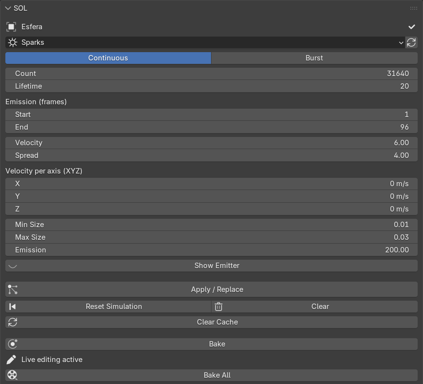
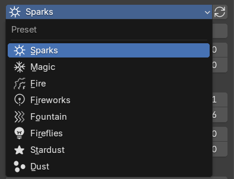
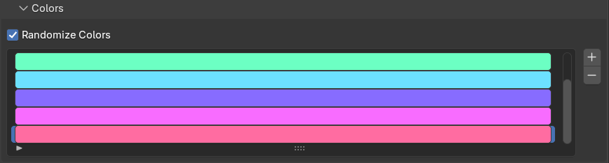
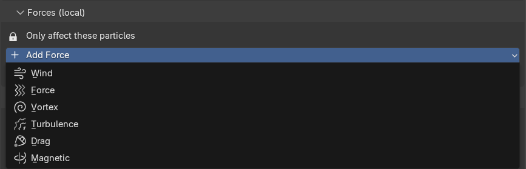
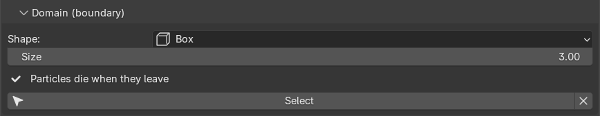
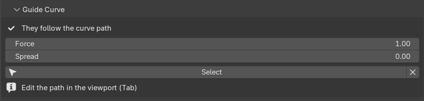
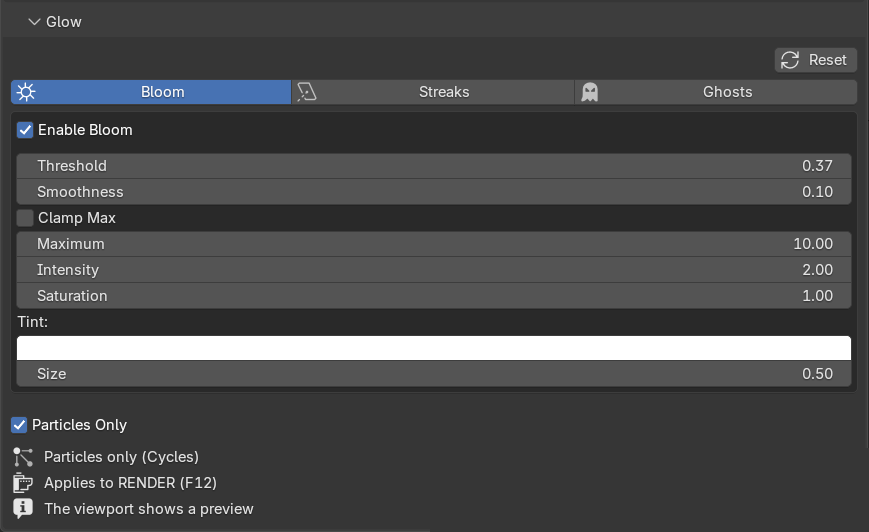

Installation
SOL installs like any other Blender add-on. No external libraries, no compiled binaries, no internet connection required.
- Open Blender and go to Edit › Preferences › Add-ons.
- Click Install… (or Install from Disk) and pick the
sol.zipfile. - Enable the SOL checkbox once it appears in the list.
- Press N in the 3D Viewport — a new SOL tab is added to the sidebar.
Tested on: Blender 4.2 through 5.1 on Windows, Linux and macOS, in both EEVEE Next and Cycles.
The manifest declares Blender 5.2 as the upper bound.
Quick start
The shortest path from "empty scene" to "glowing particles". Four steps, roughly half a minute.
- Select a mesh object — it becomes the emitter (particles come off its surface).
- Open the SOL panel and pick a preset from the dropdown (Sparks, Magic, Fire, Fireworks…).
- Press Apply / Replace.
- Play the timeline (Space) from the first frame. Watch the particles come to life.

Particles are a physics simulation — always play from the first frame.
If you jump to a middle frame without playing from the start, particles look bunched up. Use Reset (⏪) to return to frame 1, or Bake the effect (see §5) so you can scrub anywhere.
The presets
Each preset builds the particle system, an emissive material and a collection of ~18 varied shapes for you. Pick one from the dropdown — if the object already has an effect, choosing another preset swaps it instantly. Each preset is a starting point: every value below is yours to tune.

Each particle randomly picks one of ~18 themed meshes per preset (shards, crystals, embers, stars…), so the effect never looks repetitive. Every preset also remembers its emission mode and color palette.
Panel reference
Field-by-field description of every control in the SOL sidebar. The collapsible sub-panels (Colors, Forces, Domain, Guide curve, Glow) appear once an effect is applied.
| Mode | Continuous emits steadily over time (welding, fire). Burst releases every particle at once — a single impact (a hit, an explosion). |
| Count | Number of particles emitted. |
| Lifetime | How many frames each particle lives before fading out. |
| Emission (frames) · Start | First frame particles are emitted. Independent per object, so you can stagger several effects in time. In Burst mode it is the frame the burst happens. |
| Emission (frames) · End | (Continuous only) Last frame particles are emitted. Ignored / greyed in Burst. |
| Velocity | Initial push along the surface normal. |
| Spread | Randomness of the initial direction and speed. |
| Velocity per axis (XYZ) | Extra initial velocity along the emitter's X / Y / Z axes — launch particles in a chosen direction (e.g. all upward) on top of the normal push. |
| Min Size / Max Size | Each particle's size is random between these two values, giving variety. |
| Emission | Emission strength of the material — how bright the particles glow. |
| Show Emitter | Show or hide the emitter mesh, in the viewport and the render at once (synced with Blender's native "Show emitter" toggles). Default: visible in the viewport, hidden in the render. |
| ↻ (reset preset) | Restores that preset's default values, including its color palette. |

An editable color palette, per object. Loading a preset fills it with that preset's characteristic colors; change it however you like.
| + / − | Add a color to the palette, or remove the selected one. |
| Click a swatch | Open the picker to change that color. |
| Randomize Colors | On — each particle takes a random color from the palette (multicolor sparks, varied magic). Off — the color evolves with the particle's age along the palette (classic hot → cold gradient). |
In both modes the glow fades smoothly as the particle dies. Color changes are live if the object already has an effect.

SOL isolates each effect: the particles only respond to forces you add here, not to the scene's global force fields. Press Add force and pick a type:
| Wind | Constant push in one direction (blows along the field's Z axis — rotate it to aim). |
| Force | Attracts (negative) or repels (positive) radially. |
| Vortex | Spins the particles in a spiral. |
| Turbulence | Chaotic noise that agitates them (great for fire and magic). |
| Drag | Slows the particles down. |
| Magnetic | Deflects them like a magnetic field. |
Each added force shows: Strength (negative inverts), Flow, Limit range → Max range, a cursor icon to select it in the viewport (move / rotate), and an X to remove it. Even with no force added, the particles are isolated from global winds the moment you apply the effect.

A boundary around the emitter: particles that cross it die instantly. Use it to cap the reach of an effect (keep sparks from flooding the scene).
| Shape | Box or Sphere. |
| Size | Radius of the limit — distance from the emitter to the wall. |
| Add domain | Creates the limit around the emitter (it follows if you move it). |
| Select / X | Once created: select it in the viewport to move / scale by hand (G / S), or remove it. |
The domain shows as a wireframe box/sphere in the viewport but never appears in the render (F12) — no shadows, reflections or refractions. Works in EEVEE and Cycles.

Unlike forces (which are local), Blender's collisions are global. If two effects overlap in the same space, one's domain can also clip the other's particles. Size the domain around its own effect.
Makes the particles follow the path of a curve — spiraling sparks, a winding magic trail, a hand-drawn arc. Press Add curve and SOL drops a curve (rising vertically from the emitter by default); the particles take its shape.
| Select / Tab | Select the curve, then press Tab to enter Edit Mode and move its points to draw the path. Move / rotate with G / R. |
| Force | How tightly the particles hug the path. At max they ride it fully; lower it and they let go sooner. |
| Spread | How much they spread around the curve, in a spiral. 0 = glued to the path; higher = a looser, fuller trail. |
| X | Remove the curve (particles return to free movement). |
The guide is local (like forces). Particles copy the curve's shape from where they are born, so for a clean result let the curve start at or near the emitter. Works in EEVEE and Cycles.

Curve + forces: at max Force the curve overrides the local forces. To combine them, lower the Force so the particles loosen up and the wind / vortex can deflect them again.
EEVEE Next no longer ships bloom; SOL adds it for you by wiring the compositor's Glare node with one click. It affects the whole image, but since the particles are the brightest thing, they glow most. The viewport compositor is set to "Always" so you see it live.
Three effects, separated by tabs, each with its own independent settings — exactly the options of Blender's native Glare node:
| Bloom | Soft halo of light around bright areas. |
| Streaks | Lens-flare rays shooting out of bright points. |
| Ghosts | Repeated lens-ghost reflections. |
| Settings | Intensity, Threshold, Smoothness, Clamp/Max, Saturation/Tint, Size (Bloom), Streak count, Angle, Iterations, Fade and Color modulation — depending on the type. |
| Particles Only | Isolates the glow to SOL particles via an Object Index mask. Requires Cycles, and applies to the final render (F12) — the viewport shows a whole-scene preview. |
| Reset | Returns all three effects to their defaults without switching them off. |

Most presets are born from the emitter's surface. The Dust preset is different: it is born from the volume, so the motes fill the whole interior of the emitter. That's why dust is used with a cube container:
- Add a cube (Add › Mesh › Cube) and, with it selected, apply the Dust preset. Scale the cube to cover the area you want dust in.
- SOL hides the cube from the render automatically and leaves it as a wireframe box in the viewport, so you can place it without it blocking anything. In the final render only the dust shows.
- Clearing the effect restores the cube's normal look.
Dust is the one preset the scene lights (a diffuse base plus a minimal self-glow), so it flares as it crosses a light beam and fades in shadow — just like real dust. Give it a directed light (spot / sun) for the strongest look.
Live editing & baking
Settings are per object — each mesh stores and edits its own effect independently. Move any control on an object that already has an effect and the change applies live; no need to press Apply again.
Several objects & duplicates
- Apply SOL to as many objects as you like; each can have a different preset and values. Selecting an object shows its values.
- Duplicating an emitter with Shift+D shares the particle data. SOL auto-separates the copies the moment you edit one or change its preset — or press Make independent.
- After a change that affects the simulation (Amount, Velocity, Duration…), press Reset (⏪) and replay from the start to recompute the motion.
Bake to freeze it
When you like the effect, press Bake to freeze the simulation into a cache. From then on you can jump to any frame without bunching, playback is smooth and the render doesn't recalculate. Live editing pauses while baked — press Free bake to tweak again. Bake all freezes every SOL effect in the scene at once (ideal before rendering a multi-emitter animation).
Buttons
| Apply / Replace | Create the effect on the active object. If it already had one, it is cleanly replaced. |
| Reset (⏪) | Return the timeline to the first frame to recompute the simulation from scratch. |
| Clear (trash) | Completely remove SOL's effect from the active object — particle system, material, helper geometry and forces, with no leftovers. |
| Clear cache | Free the scene's particle simulation cache and return to the start. Use it when Blender shows the sim stale or bunched. |
| Bake / Free bake | Freeze the active object's effect to a cache, or release it back to live editing. |
| Bake all | Bake every SOL effect in the scene at once. |
| Make independent | (Appears only when an effect is shared with another object.) Give this object its own copy so it can be edited separately. |
The full button row sits at the bottom of the main panel — see FIG 03.
Rendering
SOL works in EEVEE Next and Cycles with no extra setup. The particles emit their own light, so they stand out on dark backgrounds — a dark background enhances the effect.
Emitter hidden in the render
When you apply an effect, SOL hides the emitter mesh from the render so only the particles show — the normal behavior for a particle effect. The emitter stays visible in the viewport so you can place it. The Show emitter toggle controls this in both the viewport and the render at once, synced with Blender's native toggles: enable it if you want the emitter mesh to appear in the render too (e.g. sparks jumping off an object that should be seen). Clearing the effect restores the original visibility.
Lens glow
For bloom, streaks and ghosts use the Glow panel (§4) — SOL configures the compositor for you and shows it live in the viewport.
SOL keeps the particle shapes in a SOL FX collection that is excluded from the view layer (it doesn't clutter the viewport or render but still feeds the instancing). The material uses the emission of a Principled BSDF so EEVEE Next shows it correctly. Dust is the exception — it is lit by the scene rather than self-glowing.
Support
SOL is published under the GNU GPL v2 (or later). It is built by Anlace and shipped through CLOUDY SKY.
| Maintainer | CLOUDY SKY |
| Version | 1.11.0 |
| Blender | 4.2.0 to 5.1.x (declared up to 5.2.0) |
| Engines | EEVEE Next · Cycles |
| License | GNU GPL-2.0-or-later |
| Product page | gokusayayin641-ai.github.io/sol-page |
| Download | Free on Superhive |
| Creator | CLOUDY SKY |
Thank you for using SOL. Happy emitting.